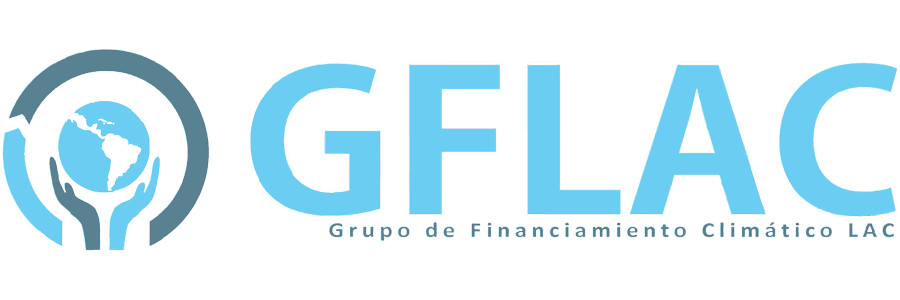

<!doctype html> <html class="no-js"> <head> <meta charset="utf-8"> <title>Financiamiento en cambio climático - Transparencia Mexicana</title> <meta name="description" content=""> <meta name="viewport" content="width=device-width"> <!-- Place favicon.ico and apple-touch-icon.png in the root directory --> <link rel="stylesheet" href="styles/main.1cee83dc.css">  <body ng-app="financiamientoClimaticoApp"> <!--[if lt IE 7]>
      <p class="browsehappy">You are using an <strong>outdated</strong> browser. Please <a href="http://browsehappy.com/">upgrade your browser</a> to improve your experience.</p>
    <![endif]--> <!-- Add your site or application content here --> <!-- <div id="header" class="text-center">
      <h1 class="title">Visualizaciones de Bosques Urbanos</h1><h4 class="title">por CodeandoM&eacute;xico</h4>
    </div> --> <div class="container"> <div ng-view=""></div> </div> <div class="footer"> <div class="text-center"> <a target="_blank" href="http://www.tm.org.mx/"></a> <a href="#"></a> <!-- <a href="#"></a> --> </div> <div class="text-center"> <a class="footer-link" target="_blank" href="http://datamx.io/dataset/inversion-ambiental/resource/39774bca-713e-46c5-bbbb-dfda9cc94be3">Datos abiertos</a> <a class="footer-link" target="_blank" href="https://github.com/CodeandoMexico/financiamiento-climatico">C&oacute;digo abierto</a> <a class="footer-link" target="_blank" href="http://www.tm.org.mx/contacto/">Contacto</a> <a class="footer-link" target="_blank" href="https://github.com/CodeandoMexico/financiamiento-climatico/blob/master/LICENSE">Licencia</a> </div> <div class="row footer-message text-center"> <p> Plataforma de georreferenciación del financiamiento climático elaborada por Transparencia Mexicana. El desarrollo de esta plataforma fue posible gracias al apoyo del Grupo de Financiamiento Climático para América Latina y el Caribe (GFLAC). </p> </div> </div> <!-- Google Analytics: change UA-XXXXX-X to be your site's ID --> <script>(function(i,s,o,g,r,a,m){i['GoogleAnalyticsObject']=r;i[r]=i[r]||function(){
       (i[r].q=i[r].q||[]).push(arguments)},i[r].l=1*new Date();a=s.createElement(o),
       m=s.getElementsByTagName(o)[0];a.async=1;a.src=g;m.parentNode.insertBefore(a,m)
       })(window,document,'script','//www.google-analytics.com/analytics.js','ga');
       
       ga('create', 'UA-36525753-3', 'auto');
       ga('send', 'pageview');</script> <!--[if lt IE 9]>
    <script src="scripts/oldieshim.a466b7b1.js"></script>
    <![endif]--> <script src="scripts/vendor.46d6091d.js"></script> <script src="topojson.v0.min.js"></script> <script src="scripts/scripts.8ac1ffb8.js"></script>  